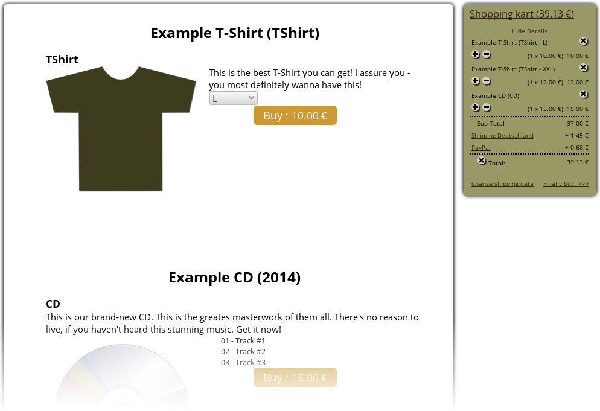

Thanks for using CBWebshop!
About
Software: CBWebshop
Copyright 2013
Author: chris_blues
Website: http://musicchris.de
A simple shop-application, written in php and a little JavaScript, aimed at musicians and bands to enhance their websites. It works solely with files, so there's no need for MySQL.
At the moment there is support for selling:
- CD's or other media (with HTML5 playbacks)
- T'shirts or other textiles
Payment-options are:
- Bank transfer
- PayPal
- Pay on delivery
At this time, it supports the following languages:
There is a translation-script in the admin area -> edit languages. If you have translated the shop in another language, please let me know! I could include your translations into the next release. Contact me: chris@musicchris.de.
License
This software is released under the GPL(3)-License. For details, see LICENSE.txt.
This software comes with a jQuery-JavaScript library which is released under the MIT-license.
Installation
- Extract the zip and upload the folder
shop to your website.
Folders:
- Make sure that the directory
shop/admin is protected with a password. This is usually done with a .htaccess and a corresponding .htpasswd file. On some hosts this is done on the admin-interface of the server.
- Make sure the directory
shop/tmp and it's contents have write access (777).
- Link the shop.
- First, you should link the shop's CSS-files in the head-section of your HTML. Put in 2 lines between the <head> - tags; like this:
<head>
[...]
<link rel="stylesheet" media="(min-width: 1024px)" href="shop/shop.css" type="text/css">
<link rel="stylesheet" media="(max-width: 1023px)" href="shop/shop-mobile.css" type="text/css">
[...]
</head>
- You can include the shop itself in different ways, depending on how you actually built your website. On my site, it's currently done via a php script. Since the shop is made to be included into existing php, you can easily add it in php via:
include("shop/shop.php");
I've created a simple example for an "index.php". There you can see, how it is done. I've commented the important lines. Make sure you pass along a $lang: $lang=english; and a unique $kartid: kartid=1234567890;(see my index.php). You'll also need to set these up in the admin area of the shop. In general settings, there is a variable "callup". This is by default set to index.php. And there are "call"s. These are the parameters that are passed along with the index.php via get. (e.g. index.php?somecall=somevalue) Add your own calls you might need to run your website smoothly.
- I recommend, that you link the jQuery library. It adds some nice visual effects to the kart.
Include the following line in your HTML's head-section:
<script type="text/javascript" src="js/jquery-1.10.2.min.js"></script>
Setup some important variables: Open the shop in a browser. Goto the following adress: https://yourdomain.com/shop/admin(I strongly advise to use https!)
Now click on the left side on show settings. Go through the settings-pages and change the variables accordingly to your site.
Now you should be good to go! Delete or edit the examples and add new items to your shop!
Edit the .css-files in the folder shop to your liking!
Have fun!